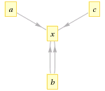

Как сделать идеальную математическую визуализацию
Советует Владимир К.
Нам понадобится:
- Формализовать задачу визуализаци;
- Немного понять WebGL;
- Добавить реактивные вычисения;
- Научиться работать с неявными функциями...
- ... и переменными-списками;
- Обобщить для работы со сложными функциями.
Формализуем:
Пусть \(P(x)\) — предикат на \( x \in S \). Тогда:
\(vis(P) = pr(X)\), где
\(X = \{x \in S | P(x)\} \) — набор данных
\(pr(x): S \rightarrow M_{w \times h}(RGB)\) — функция визуализации,
\(RGB = GF_{256}^3\) — пространство цветов.
Теперь мы можем отдать \(pr\) шейдерам WebGL и думать только про \(X\).
Как работает WebGL.
GL работает с буферами, описывающими модель:
- Берет аттрибуты: \(x, y, z, c \in \mathbb{R}^n\)
- и числа (uniforms): \(t \in \mathbb{R}\)
- поэлементно проецирует их на экран маленькими программами-шейдерами: \(f(x_i, y_i, z_i, t)\)
- Чтобы это происходило быстрее, GL отправляет буферы на видеокарту и обрабатывает параллельно.

Как же найти \(X: P(X)\)?
В общем виде — никак =(.
Поэтому мы разрешим только \(P(x) = B_1(f_1(x), g_1(x)) \wedge \dots \wedge B_n(f_n(x), g_n(x))\), где
\(B_i(x)\) — бинарное отношение на \(S_i\),
\(f_i, g_i: S \rightarrow S_i\).
Ищем \(X\)
- Теперь можно выбрать такие \(i\), что \(f_i = Id, B_i\) — отношение эквивалентности, например \(f(z) = z, g(x) = x + y, f(z) = g(x)\).
- Эти строки — наш аналог присваивания. Мы можем легко найти \(z\), если знаем все переменные правой части.
- Другие функции можно привести к виду \(F_j(x) = 0\) и искать решения итерационными методами.
Реактивное программирование
Чтобы найти значение переменной, нам нужно знать значения всех переменных, от которых оно зависит.
Построим граф зависимостей (если \(z = x + y\), то \(x, y, z\) — вершины, \((x, z), (y, z)\) — ребра.
Когда меняются значение переменной, все значения снизу по графу обновляются.
Так делают excel и grasshopper.

Бегство от мультиграфа
Если \(x = f(a,b) \wedge x = g(a, c)\), перейдем к \(F(a,b,c) = \left|f(a,b) - g(a,c)\right| = 0 \wedge x = f(a,b)\). Можно выбрать для х более простую функцию.
Убираем циклические зависимости
Но что если \(x = f(x)\) или \(x = f(y), y = g(x)\)?

Просто заменим каждый цикл на новую неявную функцию: \(F(x) = x - f(x) = 0\) или \(G(x, y) = \left|x - f(y) \right| + \left|y - g(x) \right| = 0\)
Работаем со списками
- Разрешим списки: \(X = (x_1,\dots, x_n), Y = (y_1,\dots, y_m), z(x, y)\).
- Нужно найти все значения z: \(Z = \{z(x, y) | x \in X, y \in Y\}\)
- При этом нужно поддерживать порядок: \( \forall i = 1..mn \Rightarrow z_i = z(\overline{x}_i, \overline{y}_i) \)
- Я использую реляционные таблицы и вычисляю \[\overline{X} \in \mathbb{R}^{mn}, \overline{x}_i = \left\lfloor{x_{\frac{i}{m}}}\right\rfloor\] \[\overline{Y} \in \mathbb{R}^{mn}, \overline{y}_i = i \mod n\]
Убираем циклические зависимости
Но что если \(x = f(x)\) или \(x = f(y), y = g(x)\)?
Просто заменим каждый цикл на новую неявную функцию: \(F(x) = x - f(x) = 0\) или \(G(x, y) = \left|x - f(y) \right| + \left|y - g(x) \right| = 0\)
Спасибо за внимание!
В случае чего вы всегда знаете, как меня найти.